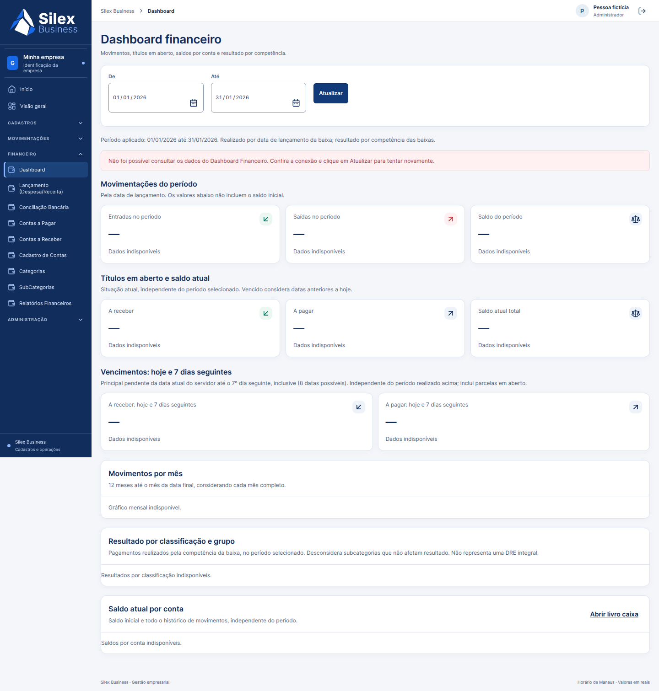

Capturas reais da candidata integrada em Chromium/Brave. Não representam a Railway nem homologação humana, assistiva ou de impressora física.

Relatório mensal em A4 · Página 2, 39 campos e valores grandes · Execução integrada de navegador · Resultados estruturados · Relatório técnico